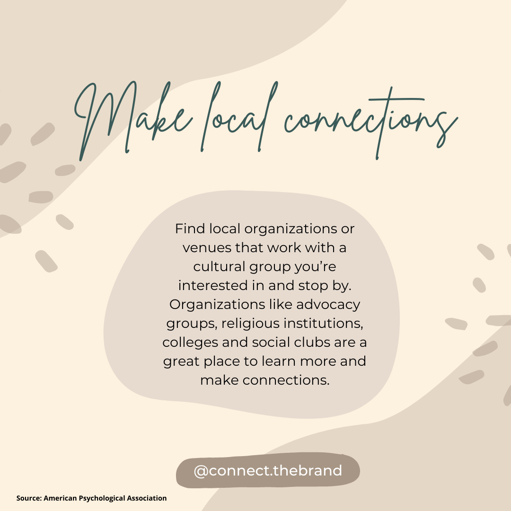

Marketing
Context of campaign and promotional activities
Our campaign is about people feeling connected with each other. Where some might on other times feel left out, there should be equality for everyone. Our message is to embrace the importance and uniqueness of cultures all over the world. We have promoted on social media through Instagram (see posts below).
Our communication & media plan objectives: We have decided to use Instagram as our main way to promote our brand and spread awareness for our website. Our decision to solely use Instagram to promote our brand revolves around our in-depth interviews, which revealed that our target audience likes the fact that the platform has many features such as posting stories, posts, reels and the shop. We have realized that our target audience is most influential via Instagram. Instagram will help us achieve our overall objective to gain 100 followers by April 11th, since our target group is most active on Instagram and will be interested in our brand, which will lead to them following our Instagram page. Our reach objective to have 1500 viewers see our message through reels is achievable, since the people who do not follow our Instagram page yet, can still see our reels. The affect and response objective will be achieved with the inspiring content we post on Instagram. We hope our followers feel more united and proud of their culture when they follow us.
Learning Points
During the social media campaign, we have learned that being consistent is extremely important. We post on every Tuesday and Friday, so our followers expect us to post on those days. Furthermore, we have realized that the time we post on Instagram is the most crucial factor. We have noticed that we receive fewer likes when we post at 15.00 than when we post at 20.00.
Our stories on Instagram did not get viewed as much as expected. We figured posting stories was a good way to be consistent with our followers, but it turned out that this was not the case. However, our reels got viewed much more than we expected. The first reels that we posted received over 6.000 views, so we believe that it got a lot of attention on the Instagram explorer page.
Something that we would do differently is definitely to strive to keep our color scheme as consistent as possible. Although we have used our color palette in the posts, the “feed” did not turn out the way we hoped it to look. We believe that using the same colors on your social media page helps to maintain consistency.
Overall, we are pleased with the positive responses we have received from our interviewees. Many people were interested in the topic “cultural inequality” and liked the design of our hoodies. We have learned to step out of our comfort zones and speak up for something we stand for, in our case, cultural equality. We have discovered the importance of being consistent and to really think about your target audience. We believe that the most important lesson we have learned is that just because we might not like something, it does not mean that others will not like it either. We have learned to create content specifically for our target audience rather than content that appeals to us.
Future Planning
We have made a planner to post 2 times a week, Tuesdays and Fridays. We posted on different times, since our target audience is active on social media at multiple times. At some times we posted a story in between. This planner worked well for us and we think it would be smart choice to continue using this planner. Posting reels also gave us a bigger reach. Therefore, we are definitely planning to post more reels in the future.
An extra post once a week would be a better way to reach a bigger audience. Making an extra post would be doable. In addition to that, posting more stories that contain, for example, polls would make our Instagram page more interactive.
Professionalism


-

-

- 